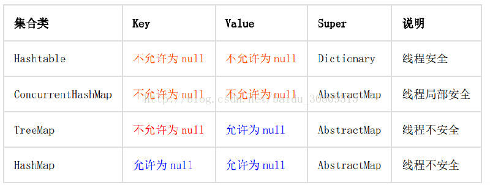

【强制】 Map/Set 的 key 为自定义对象时，必须重写 hashCode 和 equals。
正例： String 重写了 hashCode 和 equals 方法，所以我们可以非常愉快地使用 String 对象作
为 key 来使用。
（不想重写，可以把你的对象转成 String）【强制】 ArrayList 的 subList 结果不可强转成 ArrayList，否则会抛出 ClassCastException
异常： java.util.RandomAccessSubList cannot be cast to java.util.ArrayList ;
说明： subList 返回的是 ArrayList 的内部类 SubList，并不是 ArrayList ，而是 ArrayList
的一个视图，对于 SubList 子列表的所有操作最终会反映到原列表上。
（对于 SubList 子列表的所有操作最终会反映到原列表，就像对 Arrays.asList 操作，最终还会反映到 array 上）【强制】在 subList 场景中， 高度注意对原集合元素个数的修改，会导致子列表的遍历、增加、
删除均产生 ConcurrentModificationException 异常。【强制】使用集合转数组的方法，必须使用集合的 toArray (T [] array)，传入的是类型完全
一样的数组，大小就是 list.size ()。
反例： 直接使用 toArray 无参方法存在问题，此方法返回值只能是 Object [] 类，若强转其它
类型数组将出现 ClassCastException 错误。
正例：
List<String> list = new ArrayList<String>(2); | |
list.add("guan"); | |
list.add("bao"); | |
String[] array = new String[list.size()]; | |
array = list.toArray(array); |
说明： 使用 toArray 带参方法，入参分配的数组空间不够大时， toArray 方法内部将重新分配
内存空间，并返回新数组地址；如果数组元素大于实际所需，下标为 [list.size () ] 的数组
元素将被置为 null，其它数组元素保持原值，因此最好将方法入参数组大小定义与集合元素个数一致。
【强制】使用工具类 Arrays.asList () 把数组转换成集合时，不能使用其修改集合相关的方法，
它的 add/remove/clear 方法会抛出 UnsupportedOperationException 异常。
说明： asList 的返回对象是一个 Arrays 内部类，并没有实现集合的修改方法。 Arrays.asList
体现的是适配器模式，只是转换接口，后台的数据仍是数组。
String[] str = new String[] { "a", "b" };
List list = Arrays.asList(str);
第一种情况： list.add ("c"); 运行时异常。
第二种情况： str [0]= "gujin"; 那么 list.get (0) 也会随之修改。
（list 底层以数组实现，默认长度为 10）【强制】泛型通配符 <? extends T> 来接收返回的数据，此写法的泛型集合不能使用 add 方法。
说明： 苹果装箱后返回一个 <? extends Fruits> 对象，此对象就不能往里加任何水果，包括苹果。
（还没用过）【强制】不要在 foreach 循环里进行元素的 remove/add 操作。 remove 元素请使用 Iterator
方式，如果并发操作，需要对 Iterator 对象加锁。
反例：
List<String> a = new ArrayList<String>(); | |
a.add("1"); | |
a.add("2"); | |
for (String temp : a) { | |
if("1".equals(temp)){ | |
a.remove(temp); | |
} | |
} |
说明： 这个例子的执行结果会出乎大家的意料，那么试一下把 “1” 换成 “2” ，会是同样的结吗？
正例：
Iterator<String> it = a.iterator(); | |
while(it.hasNext()){ | |
String temp = it.next(); | |
if(删除元素的条件){ | |
it.remove(); | |
} | |
} |
【强制】在 JDK7 版本以上， Comparator 要满足自反性，传递性，对称性，不然 Arrays.sort，
Collections.sort 会报 IllegalArgumentException 异常。
说明：- 1） 自反性： x， y 的比较结果和 y， x 的比较结果相反。
- 2） 传递性： x>y,y>z, 则 x>z。
- 3） 对称性： x=y, 则 x,z 比较结果和 y， z 比较结果相同。
反例： 下例中没有处理相等的情况，实际使用中可能会出现异常：
new Comparator<Student>() { | |
@Override | |
public int compare(Student o1, Student o2) { | |
return o1.getId() > o2.getId() ? 1 : -1; | |
} | |
} |
（考虑要全面）
【推荐】集合初始化时，尽量指定集合初始值大小。
说明： ArrayList 尽量使用 ArrayList (int initialCapacity) 初始化。【推荐】使用 entrySet 遍历 Map 类集合 KV，而不是 keySet 方式进行遍历。
说明： keySet 其实是遍历了 2 次，一次是转为 Iterator 对象，另一次是从 hashMap 中取出 key
所对应的 value。而 entrySet 只是遍历了一次就把 key 和 value 都放到了 entry 中，效率更
高。如果是 JDK8，使用 Map.foreach 方法。
正例： values () 返回的是 V 值集合，是一个 list 集合对象； keySet () 返回的是 K 值集合，是
一个 Set 集合对象； entrySet () 返回的是 K-V 值组合集合
（这个在写 map 计数器时，用了 keyset，应该用 entrySet 的）【推荐】高度注意 Map 类集合 K/V 能不能存储 null 值的情况，如下表格：

反例： 很多同学认为 ConcurrentHashMap 是可以置入 null 值。 在批量翻译场景中，子线程分
发时，出现置入 null 值的情况，但主线程没有捕获到此异常，导致排查困难。【参考】合理利用好集合的有序性 (sort) 和稳定性 (order)，避免集合的无序性 (unsort) 和不
稳定性 (unorder) 带来的负面影响。
说明： 稳定性指集合每次遍历的元素次序是一定的。有序性是指遍历的结果是按某种比较规则
依次排列的。如： ArrayList 是 order/unsort； HashMap 是 unorder/unsort； TreeSet 是
order/sort。
（这个没有注意过）【参考】利用 Set 元素唯一的特性，可以快速对另一个集合进行去重操作，避免使用 List 的
contains 方法进行遍历去重操作。
（去重）